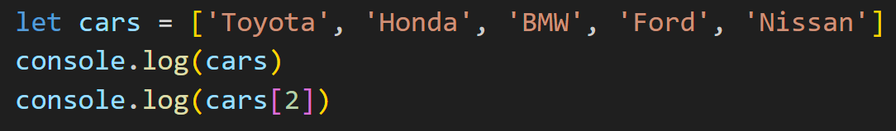
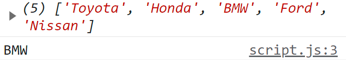
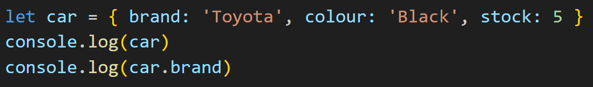
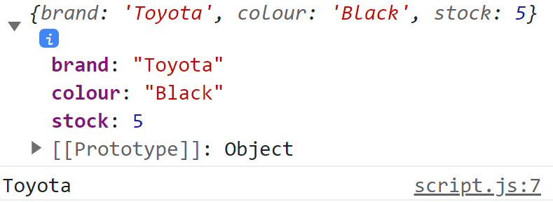

An analogy to describe JavaScript and its relationship to HTML and CSS.
Let's describe HTML, CSS, and JavaScript using a house as our basis. HTML would be like the foundation of a house; it's used to create the structure of a web page. CSS could be the interior or exterior of the house; it can be seen as the design of a web page. As for JavaScript, it would be like the utilities such as water, electricity, gas, technology, etc. JavaScript adds functionality to a website and makes it more interactive.
Explain control flow and loops using an example process from everyday life.
Control flow is the order of statements that are executed in a script, and a loop is a sequence of instructions that is repeated until a certain condition is met. When doing physical exercise, there is a process for each activity, which may also include sets and reps. For this example, I'm going to use the bench press. The steps are as follows: first lie on your back, grip the barbell, plant your feet, lift bar off the rack, lower bar to chest, then push back up. You can repeat (loop) the previous two steps a number of times and then set the barbell back onto the rack when the number of reps you want to do have been performed.
Describe what the DOM is and an example of how you might interact with it.
The DOM (Document Object Model) is an object representation of the HTML document that can allow programs to make changes to the document's structure, content, and style.
The DOM is made up of nodes, which can be elements, attributes, content, text, and many other things.
Here is an example of how you can interact with the DOM by clicking a button.

This is a function that gets the ID of an image and when the display property is set to none the image will appear, then it can hide the image when the display property is set to block.
Explain the difference between accessing data from arrays and objects.
Array
The data within an array can hold multiple values. You can access an array value by referring to its index number. In the example below, the number 2 was given and "BMW" was the output
Output of array in console
Object
The data in an object has properties and they are assigned a value. You can access the data of an object just by referring to the property's name. The example below shows the brand property was accessed and has the value "Toyota".
Output of object in console
Explain what functions are and why they are helpful.
A function is a set of instructions that can be used to perform a task or calculate a value. It should usually take an input and return an output. One way a function is helpful is by its reusability. When a function is defined you are able to use it as many times as need be. Functions are a great way to break down a problem because once it has been defined then you don't have to worry about how it works and from there you can set your attention elsewhere.